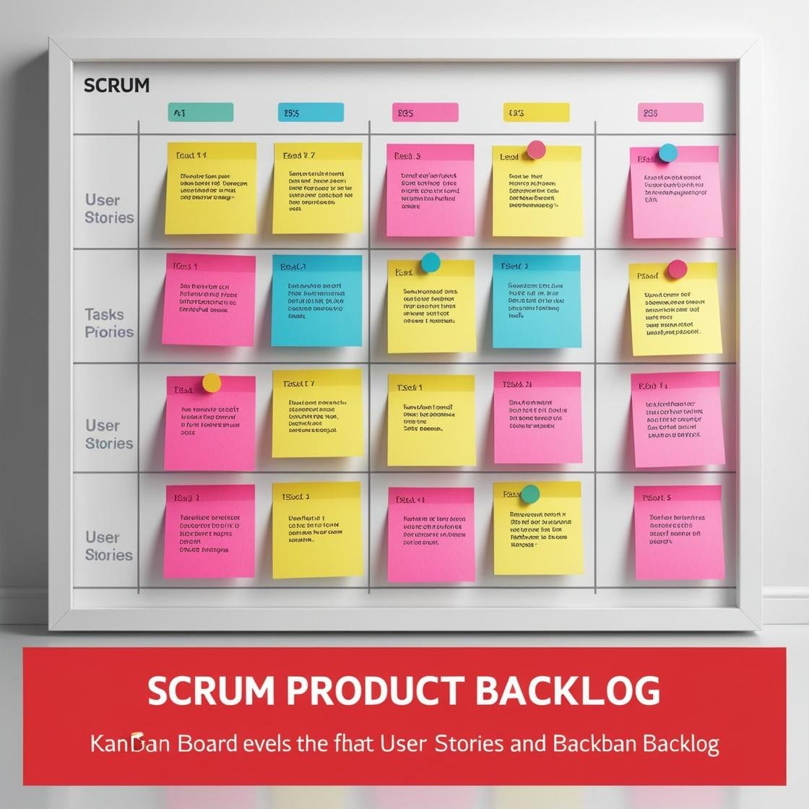
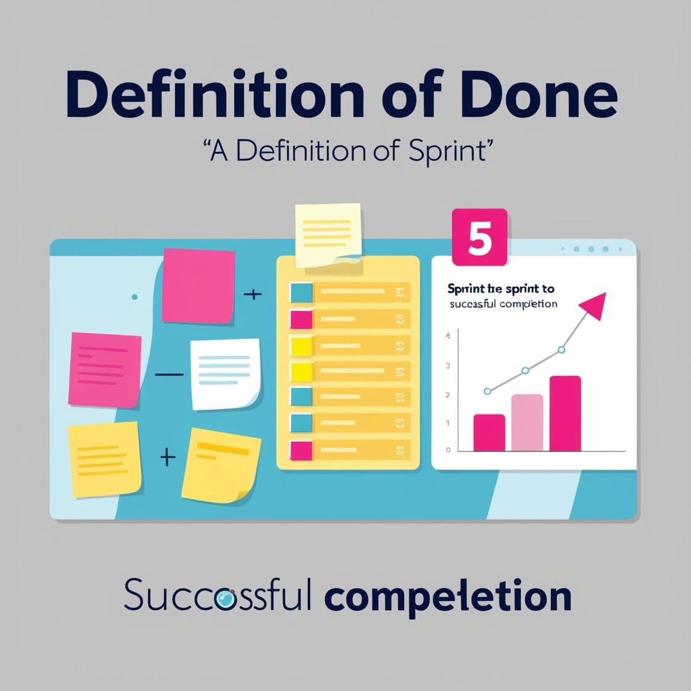
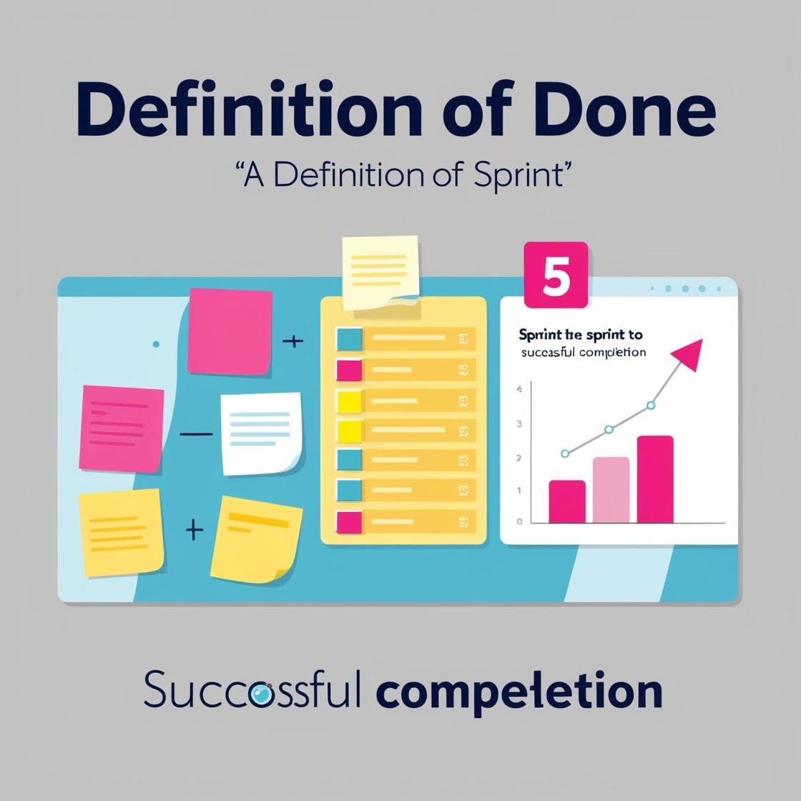
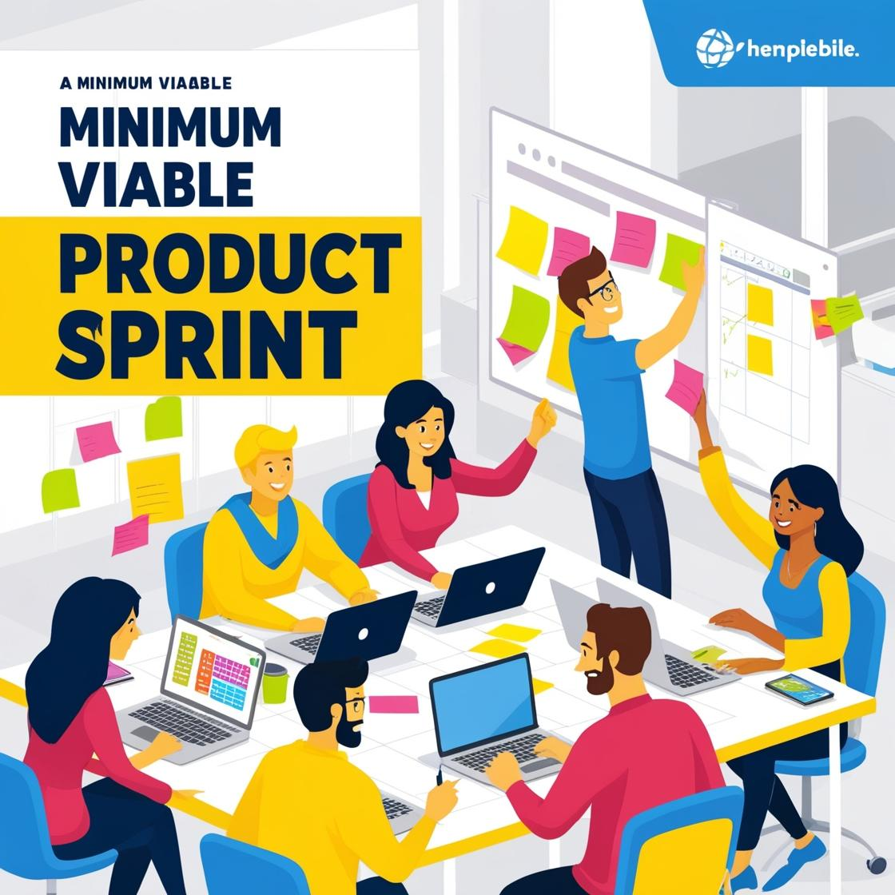

O QUE SÃO?
Os artefatos são os documentos e ferramentas de gerenciamento e documentação do produto, que
são necessários para nortear a equipe ao longo do desenvolvimento.
BACKLOG DO PRODUTO

Backlog é um documento que contém uma lista de todos os requisitos do produto, ou seja, tudo aquilo que
deve ser desenvolvido pela equipe. Essa lista é dividida por ordem de prioridade, considerando as
considerações do cliente.
Esse documento está em constante alteração, pois é necessário ordenar de acordo com as decisões do cliente
do projeto. Pode conter também melhorias, correção de problemas e pesquisas que foram essencias para o
desenvolvimento.
BURNDOWN

O Burndown é um gráfico montado pelo Scrum Master que representa a relação entre a estimativa para o
período de conclusão das atividades, para assim calcular de forma eficiente se a equipe terá tempo hábil
para concluir o trabalho. Para criar um gráfico de Burndown é preciso estimar o esforço necessário para
concluir um determinado sprint, podendo fazer isso limitando um período de tempo.
Com as estimativas em mãos devemos acompanhar o progresso diário, isso pode ser feito em um gráfico simples
ou em uma ferramenta de cronograma para visualizar o tempo de execução de cada tarefa e como o trabalho está avançando.
Após calcular as estimativas, é importante acompanhar o esforço real, possivelmente a sua linha de trabalho real não será uma reta perfeita
quando traçada no gráfico . É normal ver altos e baixos de esforço, pois maioria dos projetos enfrentam desvios pelo caminho.
Para criar um gráfico de burndown deve obter o conjunto final de dados que vêm das estimativas iniciais de esforço e dos regitros de esforço real.
USER STORY
User Story é uma descrição concisa de uma necessidade do usuário do produto ,um “requisito”, sob o ponto de vista do usuário.
A User Story busca descrever essa necessidade de uma forma simples e leve, representando apenas um item do Backlog, seu uso é opcional.
DOR E DOD
 

DoR e DoD trazem transparência ao processo de desenvolvimento. Com o uso correto destas ferramentas, equipes podem trabalhar
com maior eficiência e estarem 100% focados na entrega de valor para seu projeto.
As duas ferramentas devem ser vistas como critérios de entrada e saída, com o DoR servindo como uma
pré-condição para verificar se um item está pronto para ser levado para teste e o DoD se um item está pronto para ser movido para a próxima etapa.
MVP

MVP é a sigla que representa o Mínimo Produto Viável, permitindo que a versão mais simples de um produto seja visualizada,
apresentando suas funcionalidades mais básicas, é funcional para validar a ideia, aplicabilidade e aderência de um produto no mercado.
Tem grande importância para analisar a aceitação do produto pelo cliente. Além de ajudar a definir uma direção para o desenvolvimento
do produto, incluindo melhorias e ajustes para que seu lançamento seja um sucesso.